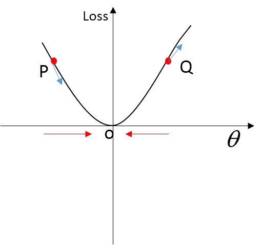
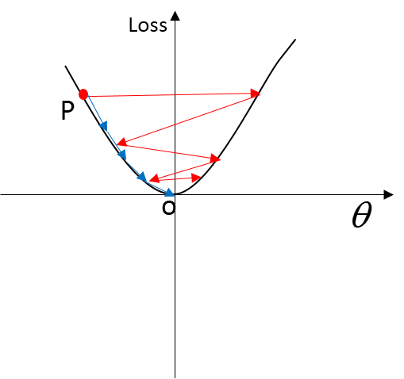
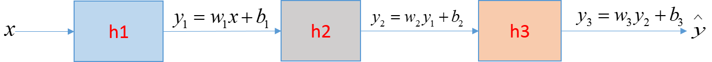

梯度下降
损失函数$J(\theta, x)$是一个关于网络参数$\theta$和样本$x$二元函数，它是一个凸函数，表示了用网络参数$\theta$来预测与真实结果的偏差大小。神经网络的目标是使得预测结果与真实结果尽可能一致，这句话可以等价于：找到一组网络参数$\theta$使得loss function最小。求解这一组网络参数$\theta$的方法之一是梯度下降法：
$$\theta=\theta-\alpha\frac{\partial J(\theta, x)}{\partial\theta}$$
其中，$\alpha$, 术语叫做学习率，也就是说每一步参数$\theta$更新步长的大小，$\frac{\partial J(\theta, x)}{\partial\theta}$为$J(\theta, x)$对参数$\theta$的偏导，反映了最快变化量。另一方面，由于采用的下降法，所以是负号。
直观的理解：以图2为例：
对于P点，它的$\frac{\partial J(\theta, x)}{\partial\theta}< 0$, 因为使得损失越小，所以$\theta$应该增大，对应于$-\frac{\partial J(\theta, x)}{\partial\theta}>0$。
对于Q点，它的$\frac{\partial J(\theta, x)}{\partial\theta}>0$, 因为使得损失越小，所以$\theta$应该减小，对应于$-\frac{\partial J(\theta, x)}{\partial\theta}<0$。

关于学习率$\alpha$,
设置过大，如图3中的红线部分，$\alpha$ 比较大 \Rightarrow$ 每一步走的比较多 \Rightarrow$ 优点：容易走出极小值点 缺点：易出现震荡，可能无法收敛至最小值点。
设置过小，如图3中的蓝线部分，$\alpha$ 比较小 \Rightarrow$ 每一步走的比较小 \Rightarrow$ 优点：比较细粒度 缺点：比较难走出极小值点。
总结来说，学习率$\alpha$一般起初可设置的比较大，随着训练，逐步减小。

从链式法则看 batch normalization

以图4为例，该网络由3个子系统$h_1, h_2, h_3$组成, 假设$h_1, h_2, h_3$均为无激活函数全连接系统。
其框架为：x $\rightarrow$ $h_1$ $\rightarrow$ $h_2$ $\rightarrow$ $h_3$ $\rightarrow$ $\hat{y}$.
由图4可以写出以下公式：
$$y_1=w_1 \cdot x+b$$
$$y_2=w_2 \cdot y_1+b$$
$$y_3=w_3 \cdot y_2+b$$
$$\hat{y} = y_3$$
采用$L_2$损失函数为：
$$L = \frac{1}{2}(\hat{y}-y)^2$$
每层的$w$参数的偏导是：
\begin{align}
\frac{\partial L}{\partial w_1} &= \frac{\partial L}{ \partial \hat{y}} \cdot \frac{\partial \hat{y}}{ \partial y_3} \cdot \frac{\partial y_3}{ \partial y_2}\cdot \frac{\partial y_2}{ \partial y_1}\cdot \frac{\partial y_1}{ \partial w_1} \\
&= (\hat{y}-y) \cdot 1 \cdot w_3 \cdot w_2 \cdot x
\end{align}
\begin{align}
\frac{\partial L}{ \partial w_2} &= \frac{\partial L}{ \partial \hat{y}} \cdot \frac{\partial \hat{y}}{ \partial y_3} \cdot \frac{\partial y_3}{ \partial y_2}\cdot \frac{\partial y_2}{ \partial w_2} \\
&= (\hat{y}-y) \cdot 1 \cdot w_3 \cdot y_1
\end{align}
\begin{align}
\frac{\partial L}{ \partial w_2} &= \frac{\partial L}{ \partial \hat{y}} \cdot \frac{\partial \hat{y}}{ \partial y_3} \cdot \frac{\partial y_3}{ \partial y_3}\\
&= (\hat{y}-y) \cdot 1 \cdot y_2
\end{align}
如果对于有n个子系统的神经网络(多层) 从1计数，每层的参数的偏导为：
$$\frac{\partial L}{ \partial w_i} = \prod_{k=n}^{i+1} w_k \cdot y_{i-1} $$
从该表达式可以发现参数的偏导与$\prod_{k=n}^{i+1} w_k$ 以及前一层的输出$y_{i-1}$有关。
梯度弥散：
梯度过小： 假设每个子系统为一个缩放器，即w<1。 那么，当网络比较深的时候，对于比较深的层来说，其$\prod_{k=n}^{i+1} w_k$不会太小，但是$y_{i-1}$会由于输入经过多个缩放器，变得非常小，最终梯度也变得非常小。对于浅层网络，$y_{i-1}$缩放的程度不是很大，但是$\prod_{k=n}^{i+1} w_k$非常小，最终梯度也变得非常小。
梯度过大： 假设每个子系统为一个放大器，即w>1。 那么，当网络比较深的时候，对于比较深的层来说，其$\prod_{k=n}^{i+1} w_k$不会太大，但是$y_{i-1}$会由于输入经过多个放大器，变得非常大，最终梯度也变得非常大。对于浅层网络，$\prod_{k=n}^{i+1} w_k$放大的程度不是很大，但是$\prod_{k=n}^{i+1} w_k$非常大，最终梯度也变得非常大。
如何解决梯度弥散：
从上面可以知道梯度的影响是$\prod_{k=n}^{i+1} w_k$和$\prod_{k=n}^{i+1} w_k$。
所以解决方式从两方面考虑：
w的初始化： 取值尽可能的适中
对每层的输出做归一化处理(batch normalization)，去掉直流信号，仍然保留信息。另外， 归一化处理(batch normalization) 对深层求梯度是有帮助的，但对于浅层求梯度求梯度起到的作用比较小。